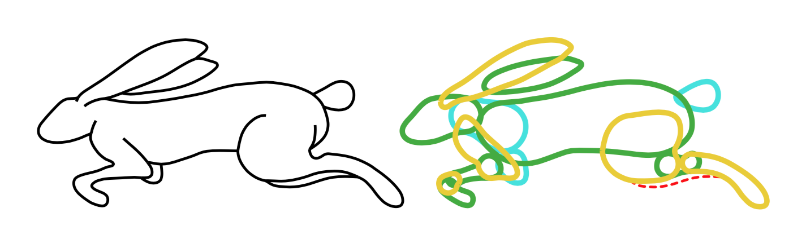

Structuring and Layering Contour Drawings of Organic Shapes
Even Entem (Université de Toulouse), Amal Dev Parakkat (Indian Institute of Technology), Marie-Paule Cani (Ecole Polytechnique), Loïc Barthe (Université de Toulouse)

Assumptions
- Implicit 3D shape is "organic"
- Curves representing the silhouette of the shape are closed
- Junctions with no tangent continuity are decorative and are not part of the core shape

Pipeline

1. Separate initial components
Each part →

2. Find salient junctions

3. Split on highest priority junction

4. Go to step 2 for each side of the split
1. Separate initial components
Curve types
- Contour: corresponds to the silhouette of the 3D shape
- Suggestive contour: connects to a contour with tangent continuity, forming a T junction, depicting a partial contour of a part
- Decorative element: everything else
- Inner isolated subgraphs (ignored in this paper)
- Trees of curves connected to the contour, either inside or outside the contour
Segmenting the drawing
Start with a graph where each vertex is an endpoint or junction
Segmenting the drawing
Split tangent-continuous X junctions in two
Segmenting the drawing
Find and separate decorative shapes: Connected components with non-tangent-continuous X junctions
Segmenting the drawing
Find curves whose half edges are in the same face cycles
- If there is tangent continuity at one end, keep it attached at that end as a suggestive contour
- Otherwise, disconnect it as a decorative element
Segmenting the drawing
Split contour lines at T junctions. Process each of those and separate connected components to subdivide them.
2. Find salient junctions
Find skeleton
- Start by finding a set of maximal circles that are tangent to the contour in two places (Medial Axis Transform)
- Remove circles that would be covered if all radii were scaled up
- Connect circle centers to form a skeleton
- Each circle on the skeleton is a candidate, where its two tangent locations would get connected
Find salient junctions
- Surface Shape Image SSIA := sum of the length lk from A to an edge in direction k over a set of many k
- dk,A,B := |lkA - lkB| ||B - A||
- wk,A,B := Gaussian of dk,A,B - μ
- Δ(SSI)A,B
:= 1 ∑k wk,A,B m ∑ k = 1 wk,A,B dk,A,B(scale-invariant change in distance to edges)
Find salient junctions
- dSSI := sum of Δ(SSI) along points of a polyline
- Find the regions of the skeleton
where dSSI > 0.45 - Each region extends from the skeleton to the curve where the circles were tangent
- Each region is a salient junction
3. Split on highest priority junction
Prioritize junctions
- Classify junctions:
- Suggestive contour to suggestive contour: either front to front or back to back depending on what side of the T junction the suggestive contours reside (front to back is ignored)
- Contour to suggestive front (ignore contour to back)
- Contour to contour
- Order based on depth cues: front-front > back-back > contour-front > contour-contour
Prioritize junctions
- Want to make sure that suggestive contours that embed others get split first
- For contour to suggestive front junctions, higher depth in tree from the contour ⇒ higher priority
- Take highest priority junction to split on

Contour completion on splits
- Connect A to B uses a cubic Bézier curve K with points (A, A+c1TA, B-c2TB, B)
- Pick c1, c2 to minimize:
E = (∫ ds)5 ||B - A||2 ∫ (dK(s)/ds)2 - For a salient junction region, connect the points giving the lowest E
Results
Examples


Comparison with SmoothSketch

SmoothSketch failure cases in red
Ambiguity

Failure cases

(a) is a recursive division failure; the rest are segmentation failures